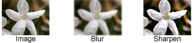

This trail introduces you to the Java 2D™ API and shows you how to display and print 2D graphics in your Java programs. The trial is intended for developers who want to enrich their knowledge of the Java 2D API, as well as for beginners in computer graphics. Almost every section contains relevant examples to illustrate specific capabilities. The Java 2D API enables you to easily perform the following tasks:
This chapter also explains less familiar concepts such as compositing.
- Draw lines, rectangles and any other geometric shape.
- Fill those shapes with solid colors or gradients and textures.
- Draw text with options for fine control over the font and rendering process.
- Draw images, optionally applying filtering operations.
- Apply operations such as compositing and transforming during any of the above rendering operations.
Using 2D Graphics API to display complex charts
 Using image-filtering operations This chapter describes the concept of drawing on-screen and off-screen images, as well as surfaces and printer devices. This trail covers the most common uses of the Java 2D APIs and briefly describes some of the more advanced features.
Overview of the Java 2D API introduces the key Java 2D concepts and describes the Java 2D rendering model. This lesson is more conceptual than other lessons of this trail, it enables you to get deep into basic notions and classes descriptions.
Fontobject with desired attributes, measure text, and determine the names of the fonts available on your system.